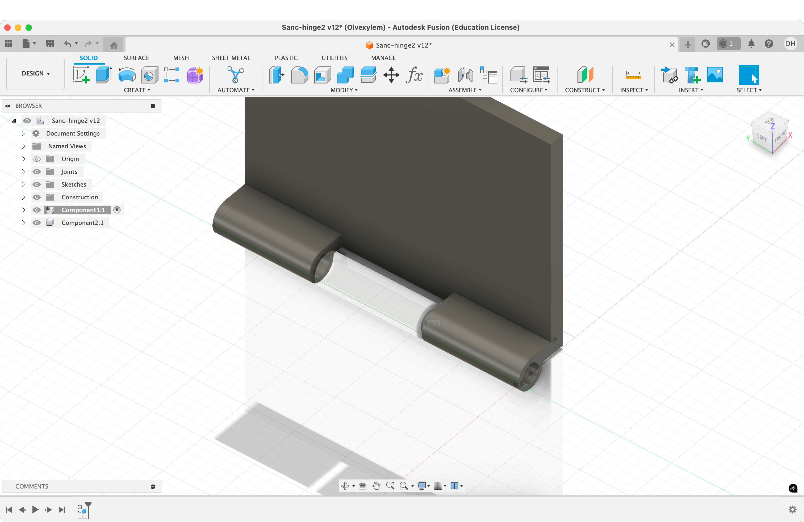
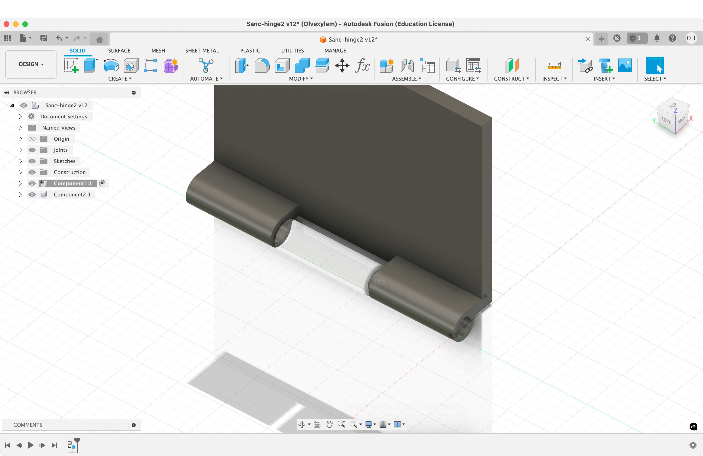
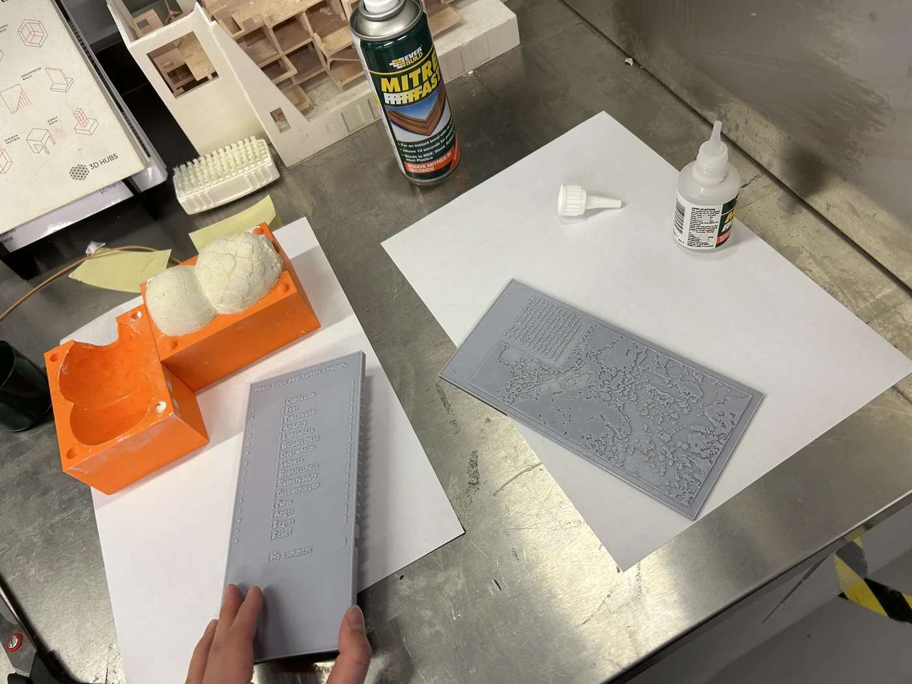
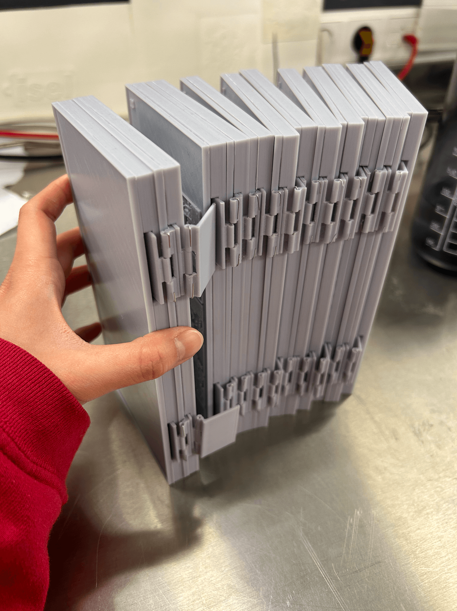
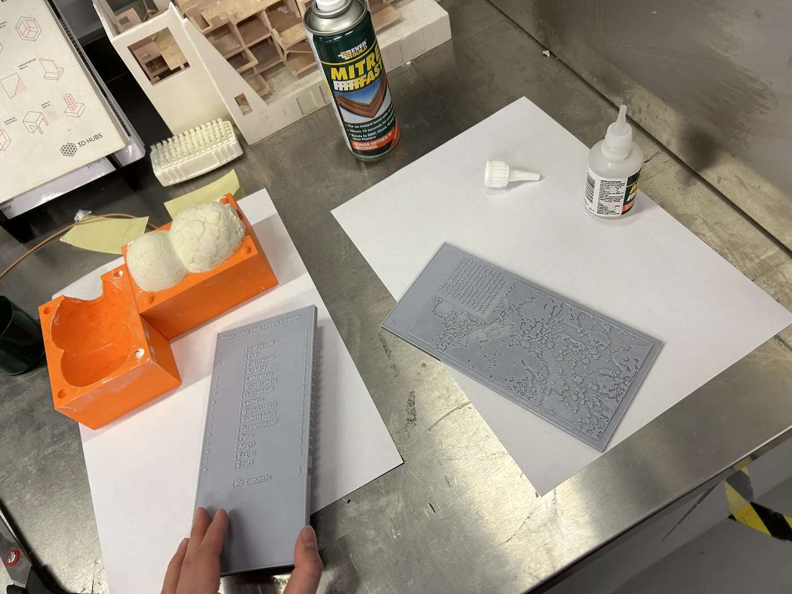
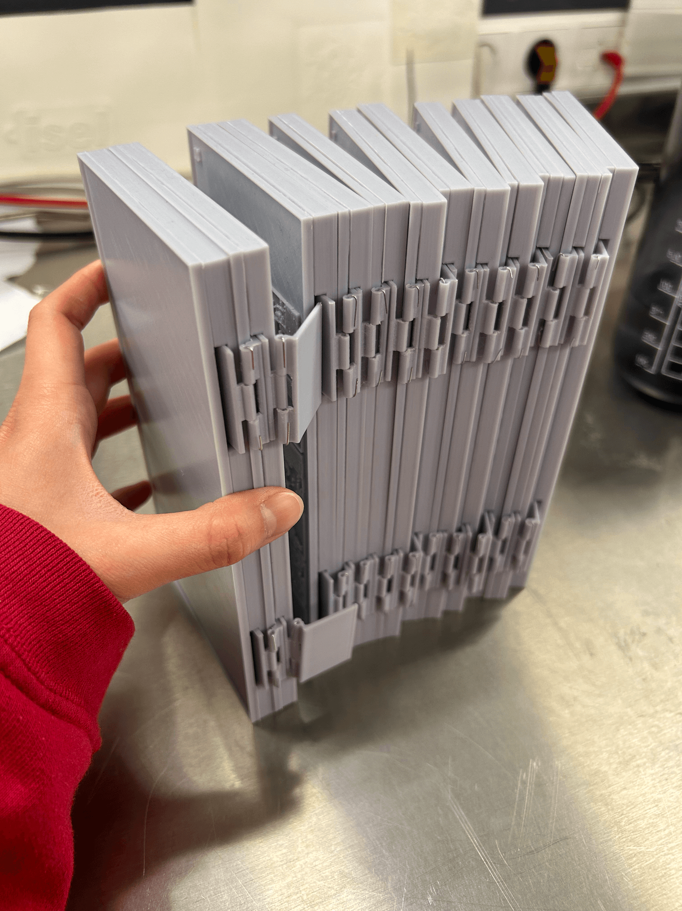
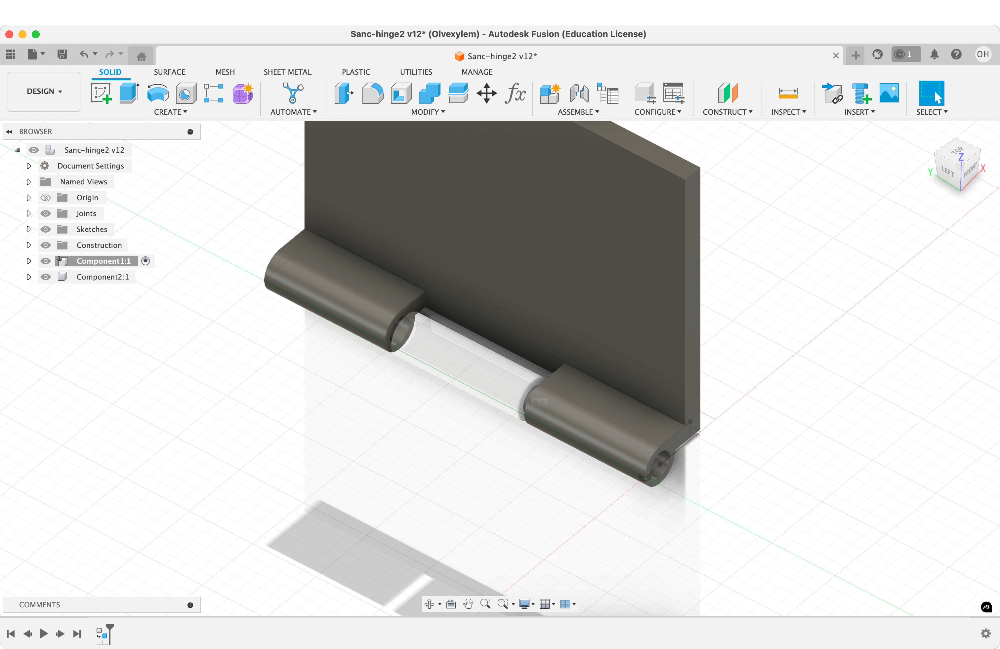
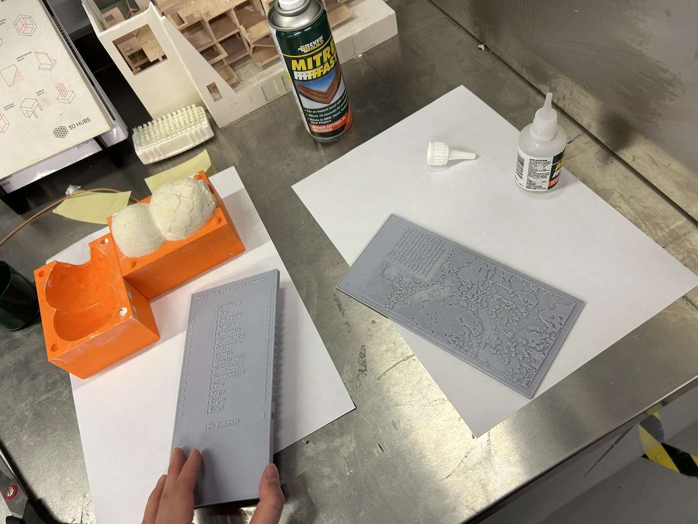
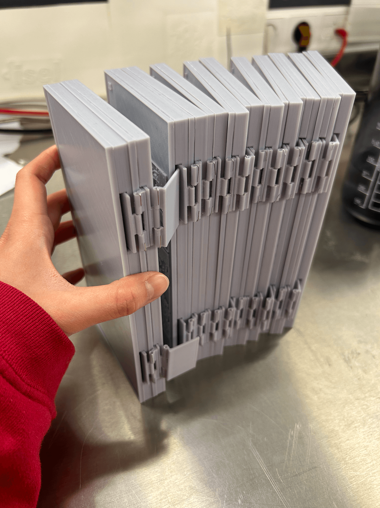

 



Sanctuary Questionnaire
A questionnaire designed for a fictitious Sanctuary that offers refuge to lost travellers and a temporary home for wandering visitors seeking to recalibrate amidst life's chaos.


